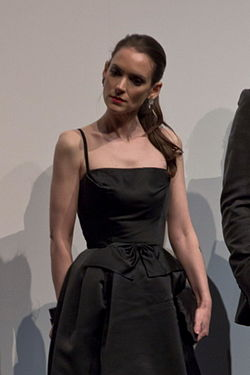
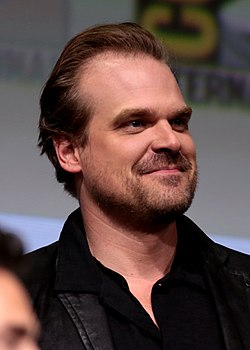
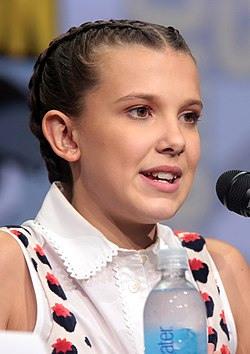
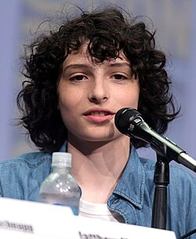
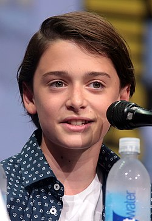
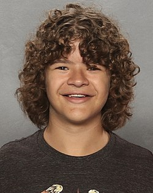
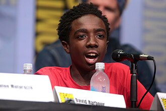
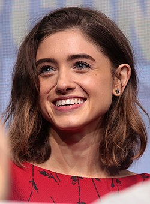

Actores principales
Joyce Byers
Joyce Byers es la madre de Will y Jonathan, y uno de los personajes más valientes y decididos de *Stranger Things*. Desde la primera temporada, demuestra una enorme fuerza emocional y determinación al enfrentarse a lo desconocido para proteger a sus hijos. Aunque muchos dudan de ella, su intuición y persistencia la llevan a descubrir la verdad sobre el Mundo del Revés. A lo largo de la serie, se convierte en una pieza clave en la lucha contra las amenazas sobrenaturales, mostrando una combinación única de coraje, sensibilidad y amor incondicional por su familia.
Jim Hopper
Jim Hopper es el jefe de policía de Hawkins y uno de los personajes principales de *Stranger Things*. A lo largo de la serie, evoluciona de ser un hombre solitario y atormentado por la muerte de su hija a convertirse en una figura paterna protectora, especialmente con Eleven. Su carácter rudo y reservado se suaviza con el tiempo, mostrando un fuerte sentido de justicia, valentía y un profundo amor por quienes lo rodean. Hopper juega un papel clave en la lucha contra las amenazas del Mundo del Revés, arriesgando su vida en múltiples ocasiones por el bien del pueblo y sus seres queridos.
Once "Jane"
Once (Eleven) es una niña con habilidades psíquicas extraordinarias que escapa de un laboratorio secreto donde fue criada como sujeto de experimentos. A lo largo de *Stranger Things*, pasa de ser una niña asustada y aislada a una joven valiente y decidida, dispuesta a proteger a sus amigos y a enfrentarse a peligros del Mundo del Revés. Su relación con Hopper como figura paterna y su amistad con el grupo de niños son clave en su desarrollo emocional. A medida que crece, lucha por encontrar su identidad y su lugar en el mundo, enfrentando tanto amenazas sobrenaturales como sus propios traumas.
Mike Wheeler
Mike Wheeler es uno de los protagonistas de *Stranger Things* y el líder natural de su grupo de amigos. A lo largo de la serie, se muestra valiente, leal y profundamente comprometido con quienes ama, especialmente con Once, con quien desarrolla una fuerte relación sentimental. Desde el inicio, es clave en la búsqueda de Will y en la protección de Eleven, demostrando una gran madurez emocional para su edad. A medida que crece, enfrenta los desafíos de la adolescencia, el amor y el peligro constante del Mundo del Revés, sin perder su sentido de justicia ni su determinación.
Actores secundarios
Will Byers
Will Byers es uno de los personajes centrales de *Stranger Things*, cuya desaparición en la primera temporada desencadena toda la historia. A lo largo de la serie, Will sufre una profunda transformación tras haber estado atrapado en el Mundo del Revés, lo que lo deja con una conexión psíquica con sus criaturas, especialmente el Azotamentes y Vecna. Aunque es sensible, reservado y artístico, también lucha con sentirse desplazado del grupo a medida que sus amigos maduran. Su relación con Eleven, Mike y su hermano Jonathan es clave para su desarrollo emocional, y en las temporadas más recientes comienza a explorar su identidad y su lugar en el mundo.
Dustin Henderson
Dustin Henderson es uno de los personajes más carismáticos y queridos de *Stranger Things*. Inteligente, curioso y con un gran sentido del humor, se destaca por su habilidad con la tecnología y su lealtad inquebrantable hacia sus amigos. A lo largo de la serie, demuestra valentía en situaciones extremas y forma vínculos únicos, como su amistad con Steve Harrington. También es conocido por su optimismo y su capacidad para mantener al grupo unido en los momentos más difíciles. Dustin evoluciona de un niño curioso a un joven ingenioso y valiente, esencial en la lucha contra las amenazas del Mundo del Revés.
Lucas Sinclair
Lucas Sinclair es un miembro clave del grupo principal en *Stranger Things*, conocido por su carácter decidido, valiente y a veces escéptico. A lo largo de la serie, evoluciona de ser un niño desconfiado hacia Eleven a convertirse en un joven más comprensivo, maduro y emocionalmente comprometido, especialmente en su relación con Max. Aunque al principio busca encajar en entornos más populares, nunca abandona a sus verdaderos amigos y demuestra una gran lealtad y coraje frente a las amenazas del Mundo del Revés. Su crecimiento personal lo convierte en un personaje más complejo y emocionalmente fuerte con cada temporada.
Nancy Wheeler
Nancy Wheeler es un personaje que evoluciona notablemente a lo largo de *Stranger Things*, pasando de ser una estudiante preocupada por su vida social a una joven valiente, decidida y comprometida con descubrir la verdad. Su inteligencia y determinación la llevan a investigar los misteriosos sucesos en Hawkins, enfrentándose a monstruos, conspiraciones y peligros del Mundo del Revés. A lo largo de la serie, demuestra una fuerte ética periodística, un agudo sentido de la justicia y un crecimiento emocional notable, especialmente en su relación con Jonathan y su papel como líder en las investigaciones del grupo.
Jonathan Byers es el hermano mayor de Will y un personaje introspectivo, sensible y protector en *Stranger Things*. Desde el inicio, se muestra como alguien solitario pero profundamente leal a su familia, dispuesto a todo para protegerlos, especialmente durante la desaparición de Will. A lo largo de la serie, desarrolla una relación romántica con Nancy Wheeler, con quien comparte su instinto por descubrir la verdad y enfrentar el peligro. Aunque más reservado que otros personajes, Jonathan demuestra coraje, madurez y un fuerte sentido de responsabilidad, siendo una figura estable y confiable en medio del caos que rodea a Hawkins.
Steve Harrington comienza en *Stranger Things* como el típico chico popular del instituto, pero a lo largo de la serie se transforma en uno de los personajes con mayor desarrollo. De ser arrogante y superficial, evoluciona hacia alguien valiente, protector y con un gran corazón. Su inesperada amistad con Dustin y su rol como "niñera" del grupo lo vuelven entrañable y esencial en la lucha contra las amenazas del Mundo del Revés. Steve demuestra madurez, empatía y un fuerte sentido de liderazgo, convirtiéndose en un personaje clave y muy querido por los fans.
Max Mayfield se une al grupo en la segunda temporada de *Stranger Things* y rápidamente se destaca por su carácter fuerte, independiente y decidido. A lo largo de la serie, demuestra ser valiente y leal, enfrentando tanto amenazas sobrenaturales como conflictos personales, especialmente relacionados con su abusivo hermanastro Billy. Su relación con Lucas y su amistad con Eleven la ayudan a abrirse emocionalmente. En la cuarta temporada, se convierte en uno de los principales objetivos de Vecna, lo que revela su profunda lucha interna con el dolor y la culpa. Max muestra una gran fortaleza emocional, convirtiéndose en un personaje clave y muy querido por los fans.
Robin Buckley se une a *Stranger Things* en la tercera temporada y rápidamente se gana un lugar importante en el grupo. Inteligente, sarcástica y valiente, Robin trabaja con Steve en el centro comercial Starcourt y juntos descubren una conspiración rusa. A lo largo de la serie, demuestra habilidades analíticas clave y una gran capacidad para mantener la calma en situaciones extremas. Su amistad con Steve se vuelve una de las más sólidas y entrañables de la serie. Además, su apertura sobre su identidad y su confianza creciente la convierten en un personaje auténtico, valiente y muy querido por los fans.